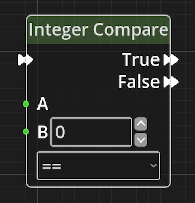
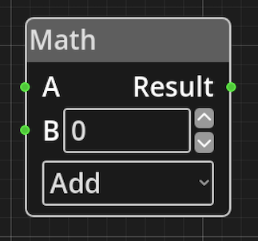
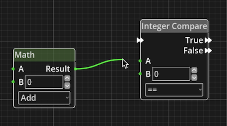

What is Logic in Kwyll?
One of the most important aspects of a game created with Kwyll is the ability to make objects, and other things, "do stuff", this is achieved with the logic system that is built into Kwyll. It is akin to the programming language in other game creation tools, but instead of being text based, it is visual, working by wiring together small items that do a relatively simple thing so that the whole does something more interesting.
These "small items" are called Nodes, Kwyll provides a basic set of Nodes that can be combined to do a variety of things, the process of "wiring" them together enables each Node to either pass data to another node, or to control the flow of the "program". Some of the Nodes are very simple, such as the Math Node, whose only job is to take in two values, perform a basic mathematical operation on them, add, subtract, multiply or divide, and then output the result. Others are more complex and perform a detailed operation in and of themselves based on the input and parameters.
Each node as an optional set of input and output Ports which can be of different types depending on their purpose, and a set of Parameters which configure the operation of the Node.
 This is a relatively simple Node that demonstrates most of the key features of a logic Node. Here you can see on the left of the Node; 3 input Ports, one with a double arrow at the top, and two green ones below. The double arrow port is a Flow port, it is connected to other ports of the same type to control the flow of execution. A Node will only have at most 1 Flow input ports. The green ports are data inputs, they provide integer numerical values to the node from some other node. You'll notice that the "B" Port also has a numerical input field alongside it, this is because in this particular case the value that the Node uses can either be provided by another node via the Port or specified as a fixed value. In this example, you may want to compare the input from another Node at A with either an input from another Node or with 0 for example. If you connect another Node to the input Port B, the numerical input field will be hidden as it is no longer necessary. On the right of the Node are the output ports, in this example there are two Flow Ports, True and False. This Node is a "branching" node, it will perform a comparison of the two values A and B using the specified comparison type, for example "equal". If the comparison results in a positive result, i.e. the two values are equal, the flow will follow whatever is connected to the True output Port, if anything. If the comparison is negative, A and B are not equal, the flow will follow the False output Port. Below the B port is a Parameter, in this case it is the type of comparison to be made between A and B, equal, greater than, less than, etc. A Parameter can be identified by the lack of any input or output ports. It is a means of configuring the operation of a Node in a way that doesn't require input from another Node. To summarise, on this Node A is a Port only, it requires an input wire to work, B is an input Port or Parameter you can choose how this value is set depeneding upon your needs, and the comparison type is a Parameter, you must choose this value when editing and it cannot change at runtime.
{kind=link}
 Some nodes will have no Flow ports at all, this means the Node is not meant to be part of the flow, but instead is meant to provide data to other nodes that are part of the flow. These Nodes will have output data Ports that can be connected to the input data Ports of other Nodes, when a Node that is part of a flow has a wire connecting one of its input Ports to the output Port of another Node, it will request the value from the other Node when it needs it.
{kind=link}
Nodes that are in a logic graph but not connected to a valid Flow or have output Ports that are not connected to anything, will not contribute to the program and will not be exported.
There are currently two types of data port in Kwyll's logic, integer numerical, indicated by a green colour and connected by a green wire, and object reference, indicated by a blue colour and connected by a blue wire. It is only possible to connect two ports of the same type to one another, be that a Flow port or a type of data Port.
Editing Nodes
In the logic editor, Nodes are created by right clicking the mouse in an empty area of the grid, a pop-up menu will appear with a list of all the possible Node types. When one is selected it will appear in the graph at the mouse position. There is one more way to create Nodes via the variable list, which will be covered when that section of the logic editor is detailed.
Click and drag on Nodes to move them around the graph and organise your program. You can Ctrl/Cmd click on multiple Nodes to select more than one at a time, or click and drag in space on the grid to drag a rectangle around a selection of Nodes.
 To connect Ports left click on one of the two Ports and drag, a wire will appear connected to the Port you clicked on and the mouse. Drag the mouse to the other Port and when you get close enough, it will snap to the Port, release the mouse to complete the connection. If you struggle to begin the connection operation because the port is too small, it can sometimes be helpful to zoom in, this can be achieved using the mouse wheel or pinch gesture. Ports can be connected in either direction, it makes no difference to the way they work, data only flows from output to input.
{kind=link}
To disconnect a port, click on the input end of the wire, the end going into the input port of a Node, drag it away from the port and it'll disconnect, you can reconnect to another port while still holding the mouse, or release the mouse with the wire disconnected to delete the wire altogether.